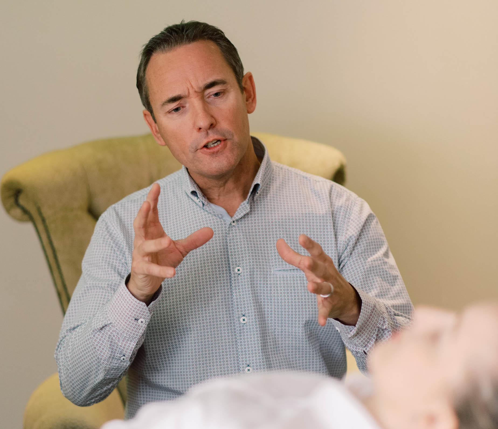

A través de la práctica de valores y principios espirituales como la fé, confianza, un alto sentido de responsabilidad y honestidad, trabajamos para crear conciencia de enfermedad. Esta conciencia permite a nuestros pacientes tener herramientas para trabajar con la conducta autodestructiva que padezca. Se trabajan los problemas y conflictos emocionales a través de la catarsis (expulsión del dolor por medio de la palabra), asociación libre (expresar lo que sentimos y pensamos sin miedo a ser juzgados) y la práctica del programa de 12 pasos de Alcohólicos Anónimos, que se ha posicionado como el método de ayuda mutua más exitoso a nivel internacional.
Nuestro modelo de tratamiento es mixto (Consejo Estatal Contra las Adicciones en Jalisco, No. de Registro JAL-045/M-01/22012020) esto significa que tenemos en nuestro equipo clínico profesionales de la salud, psicolog@s, médico general y médico psiquiatra. Trabajamos con la experiencia de 17 años en la atención de conductas autodestructivas más el respaldo de las ciencias de la salud. Lo que nos permite un abordaje integral de la salud mental.
“Poco a poco se va lejos, un viaje de mil kilómetros inicia con un solo paso.” Lao-Tse